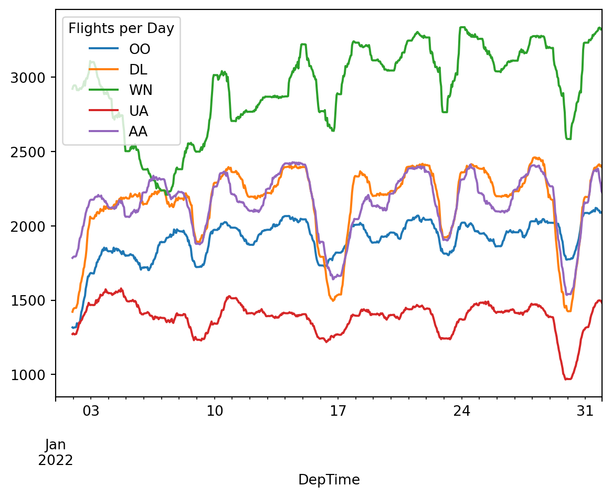

from pathlib import Path
import polars as pl
import pandas as pd
import seaborn as sns
import matplotlib.pyplot as plt
pl.Config.set_tbl_rows(5)
pd.options.display.max_rows = 5
data_dir = Path("../data")
extracted = data_dir / "On_Time_Reporting_Carrier_On_Time_Performance_(1987_present)_2022_1.csv"2 Method Chaining
Many people don’t need to be told why method chaining is nice. Many languages make it easy to write thing.min().abs().str() instead of str(abs(min(thing))).
But the Python standard library tends to prefer the ugly way, so if you’ve spent a lot of time doing vanilla Python stuff, you may have become accustomed to writing nasty nested function calls or declaring intermediate variables like min_thing. This is sad because a sensible degree of method chaining can make code a lot easier to read.
It’s not always easy for libraries to accommodate method chaining - in fancy terms, to be fluent interfaces. Even Pandas used to be much less fluent: when Modern Pandas was released, methods like assign and pipe were quite recent.
Fortunately Polars is very fluent. The expression API provides a very elegant way to do a bunch of stuff to a dataframe in one fell swoop, and Polars mostly doesn’t mutate dataframes in-place (method chaining with side effects is often a bad idea).
Let’s see how this looks in practice by cleaning up the flight data we gathered in Chapter 1.
2.1 Setup
2.2 Extract city names
The dataset has two columns that look like $city, $state. Let’s define a function that removes the state part from these columns. There’s no method chaining yet but we do have a few things to talk about while we’re here:
def extract_city_name_pl() -> pl.Expr:
"""
Chicago, IL -> Chicago for OriginCityName and DestCityName
"""
cols = ["OriginCityName", "DestCityName"]
return pl.col(cols).str.split(",").list.get(0)def extract_city_name_pd(df: pd.DataFrame) -> pl.DataFrame:
"""
Chicago, IL -> Chicago for OriginCityName and DestCityName
"""
cols = ["OriginCityName", "DestCityName"]
return df.assign(**{col: df[col].str.split(",", regex=False).str[0] for col in cols})Some items to note:
Our Pandas function adds columns to a dataframe, while our Polars function simply generates a Polars expression. You’ll find it’s often easier to pass around
Exprs than dataframes because:- They work on both
DataFrameandLazyFrame, and they aren’t bound to any particular data. - Polars performs better if you put everything in one
.selector.with_columnscall, rather than calling.selectmultiple times. If you pass around expressions, this pattern is easy.
- They work on both
Polars is fast and convenient for doing the same thing to multiple columns. We can pass a list of columns to
pl.coland then call a method on thatpl.colas if it were one column. When the expression gets executed it will be parallelized by Polars.Meanwhile in Pandas we have to loop through the columns to create a dictionary of kwargs for
.assign. This is not parallelized. (We could use.applywithaxis=0instead but this would still take place sequentially and isn’t any easier to read, in my opinion).Calling
.str.splitin Polars creates a column where every element is a list. This kind of data is annoying in Pandas because it’s slow and awkward to work with - notice how the most convenient way to get the first element of a list column in Pandas is to call.str[0], even though this is a list, not a string 🤔I’m not sure if that’s even supposed to work. In contrast, Polars actually has first class support for list columns, and they are fast as long as they don’t have mixed types.
def time_col_pl(col: str) -> pl.Expr:
col_expr = pl.col(col)
return (
pl.when(col_expr == "2400")
.then(pl.lit("0000"))
.otherwise(col_expr)
.str.strptime(pl.Time, "%H%M", strict=True)
.alias(col)
)
def time_to_datetime_pl(columns: list[str]) -> list[pl.Expr]:
"""
Combine all time items into datetimes.
2014-01-01,0914 -> 2014-01-01 09:14:00
"""
date_col = pl.col("FlightDate")
return [
date_col
.dt.combine(time_col_pl(col))
.alias(col)
for col in columns
]def time_col_pd(col: str, df: pd.DataFrame) -> pd.Series:
timepart = df[col].replace("2400", "0000")
return pd.to_datetime(df["FlightDate"] + ' ' +
timepart.str.slice(0, 2) + ':' +
timepart.str.slice(2, 4),
errors='coerce')
def time_to_datetime_pd(df: pd.DataFrame, columns: list[str]) -> pd.DataFrame:
'''
Combine all time items into datetimes.
2014-01-01,0914 -> 2014-01-01 09:14:00
'''
return df.assign(**{col: time_col_pd(col, df) for col in columns})The Pandas version concatenates the date and time strings then parses the datetime string. We could do the same in Polars but I wanted to show you the pl.Date and pl.Time dtypes, which Pandas lacks. We can then combine pl.Date and pl.Time with .dt.combine().
2.3 Bringing It All Back Home
It’s time for some method chaining. First, some common variables for both the Polars and Pandas code:
category_cols = [
"Dest",
"Tail_Number",
"IATA_CODE_Reporting_Airline",
"CancellationCode",
]
time_cols = ["DepTime", "ArrTime", "CRSArrTime", "CRSDepTime"]
cols = (
category_cols
+ time_cols
+ [
"FlightDate",
"Flight_Number_Reporting_Airline",
"OriginCityName",
"DestCityName",
"Origin",
"DepDelay",
]
)Now to read the CSVs and use the functions we defined above:
dtypes_pl = (
{col: pl.Categorical for col in category_cols}
| {"FlightDate": pl.Date}
| {col: pl.Utf8 for col in time_cols}
)
df_pl = (
pl.scan_csv(extracted, dtypes=dtypes_pl, null_values="")
.select(cols)
.with_columns([extract_city_name_pl(), *time_to_datetime_pl(time_cols)])
.collect()
)
df_pl.head()/tmp/ipykernel_347969/2939372206.py:7: DeprecationWarning: The argument `dtypes` for `scan_csv` is deprecated. It has been renamed to `schema_overrides`.
pl.scan_csv(extracted, dtypes=dtypes_pl, null_values="")
shape: (5, 14)
| Dest | Tail_Number | IATA_CODE_Reporting_Airline | CancellationCode | DepTime | ArrTime | CRSArrTime | CRSDepTime | FlightDate | Flight_Number_Reporting_Airline | OriginCityName | DestCityName | Origin | DepDelay |
|---|---|---|---|---|---|---|---|---|---|---|---|---|---|
| cat | cat | cat | cat | datetime[μs] | datetime[μs] | datetime[μs] | datetime[μs] | date | i64 | str | str | str | f64 |
| "DCA" | "N119HQ" | "YX" | null | 2022-01-14 12:21:00 | 2022-01-14 13:56:00 | 2022-01-14 13:52:00 | 2022-01-14 12:24:00 | 2022-01-14 | 4879 | "Columbus" | "Washington" | "CMH" | -3.0 |
| "DCA" | "N122HQ" | "YX" | null | 2022-01-15 12:14:00 | 2022-01-15 13:28:00 | 2022-01-15 13:52:00 | 2022-01-15 12:24:00 | 2022-01-15 | 4879 | "Columbus" | "Washington" | "CMH" | -10.0 |
| "DCA" | "N412YX" | "YX" | null | 2022-01-16 12:18:00 | 2022-01-16 13:39:00 | 2022-01-16 13:52:00 | 2022-01-16 12:24:00 | 2022-01-16 | 4879 | "Columbus" | "Washington" | "CMH" | -6.0 |
| "DCA" | "N405YX" | "YX" | null | 2022-01-17 12:17:00 | 2022-01-17 14:01:00 | 2022-01-17 13:52:00 | 2022-01-17 12:24:00 | 2022-01-17 | 4879 | "Columbus" | "Washington" | "CMH" | -7.0 |
| "DCA" | "N420YX" | "YX" | null | 2022-01-18 12:18:00 | 2022-01-18 13:23:00 | 2022-01-18 13:52:00 | 2022-01-18 12:24:00 | 2022-01-18 | 4879 | "Columbus" | "Washington" | "CMH" | -6.0 |
dtypes_pd = (
{col: pd.CategoricalDtype() for col in category_cols}
| {col: pd.StringDtype() for col in time_cols}
)
df_pd = (
pd.read_csv(extracted, dtype=dtypes_pd, usecols=cols, na_values="")
.pipe(extract_city_name_pd)
.pipe(time_to_datetime_pd, time_cols)
.assign(FlightDate=lambda df: pd.to_datetime(df["FlightDate"]))
)
df_pd[cols].head()| Dest | Tail_Number | IATA_CODE_Reporting_Airline | CancellationCode | DepTime | ArrTime | CRSArrTime | CRSDepTime | FlightDate | Flight_Number_Reporting_Airline | OriginCityName | DestCityName | Origin | DepDelay | |
|---|---|---|---|---|---|---|---|---|---|---|---|---|---|---|
| 0 | DCA | N119HQ | YX | NaN | 2022-01-14 12:21:00 | 2022-01-14 13:56:00 | 2022-01-14 13:52:00 | 2022-01-14 12:24:00 | 2022-01-14 | 4879 | Columbus | Washington | CMH | -3.0 |
| 1 | DCA | N122HQ | YX | NaN | 2022-01-15 12:14:00 | 2022-01-15 13:28:00 | 2022-01-15 13:52:00 | 2022-01-15 12:24:00 | 2022-01-15 | 4879 | Columbus | Washington | CMH | -10.0 |
| 2 | DCA | N412YX | YX | NaN | 2022-01-16 12:18:00 | 2022-01-16 13:39:00 | 2022-01-16 13:52:00 | 2022-01-16 12:24:00 | 2022-01-16 | 4879 | Columbus | Washington | CMH | -6.0 |
| 3 | DCA | N405YX | YX | NaN | 2022-01-17 12:17:00 | 2022-01-17 14:01:00 | 2022-01-17 13:52:00 | 2022-01-17 12:24:00 | 2022-01-17 | 4879 | Columbus | Washington | CMH | -7.0 |
| 4 | DCA | N420YX | YX | NaN | 2022-01-18 12:18:00 | 2022-01-18 13:23:00 | 2022-01-18 13:52:00 | 2022-01-18 12:24:00 | 2022-01-18 | 4879 | Columbus | Washington | CMH | -6.0 |
Differences between the two approaches:
- Since
scan_csvis lazy, usingscan_csvfollowed by.selecting a subset of columns is equivalent tousecolsinpd.read_csv. This is whypl.scan_csvitself doesn’t have a parameter for choosing a subset of columns to read. - Polars does have a
.pipemethod, but we don’t use it in this case since it’s easier to work with expressions.
Tip
The .with_columns method is for adding new columns or overwriting existing ones. But .select can also do those things, so you may be wondering: what’s the difference?
Basically the .with_columns method is just convenient for when you don’t want to reselect all the columns you’re not modifying.
2.4 Example plots
2.4.1 Daily Flights
Here’s how plotting the number of daily flights looks in Polars and Pandas:
Note
Polars has its own built-in plotting with hvPlot but the time series plots are not great. Since most of the plots in this book are time series plots, we’ll just use .to_pandas() followed by .plot() function after doing all the data manipulation in Polars.
# filter for the busiest airlines
filter_expr = pl.col("IATA_CODE_Reporting_Airline").is_in(
pl.col("IATA_CODE_Reporting_Airline")
.value_counts(sort=True)
.struct.field("IATA_CODE_Reporting_Airline")
.head(5)
)
(
df_pl
.drop_nulls(subset=["DepTime", "IATA_CODE_Reporting_Airline"])
.filter(filter_expr)
.sort("DepTime")
.group_by_dynamic(
"DepTime",
every="1h",
group_by="IATA_CODE_Reporting_Airline")
.agg(pl.col("Flight_Number_Reporting_Airline").count())
.pivot(
index="DepTime",
columns="IATA_CODE_Reporting_Airline",
values="Flight_Number_Reporting_Airline",
)
.sort("DepTime")
# fill every missing hour with 0 so the plot looks better
.upsample(time_column="DepTime", every="1h")
.fill_null(0)
.select([pl.col("DepTime"), pl.col(pl.UInt32).rolling_sum(24)])
.to_pandas()
.set_index("DepTime")
.rename_axis("Flights per Day", axis=1)
.plot()
)/tmp/ipykernel_347969/713028378.py:18: DeprecationWarning: The argument `columns` for `DataFrame.pivot` is deprecated. It has been renamed to `on`.
.pivot(
(
df_pd
.dropna(subset=["DepTime", "IATA_CODE_Reporting_Airline"])
# filter for the busiest airlines
.loc[
lambda x: x["IATA_CODE_Reporting_Airline"].isin(
x["IATA_CODE_Reporting_Airline"].value_counts().index[:5]
)
]
.assign(
IATA_CODE_Reporting_Airline=lambda x: x[
"IATA_CODE_Reporting_Airline"
].cat.remove_unused_categories() # annoying pandas behaviour
)
.set_index("DepTime")
# TimeGrouper to resample & groupby at once
.groupby(["IATA_CODE_Reporting_Airline", pd.Grouper(freq="H")])[
"Flight_Number_Reporting_Airline"
]
.count()
# the .pivot takes care of this in the Polars code.
.unstack(0)
.fillna(0)
.rolling(24)
.sum()
.rename_axis("Flights per Day", axis=1)
.plot()
)/tmp/ipykernel_347969/4223446110.py:17: FutureWarning: 'H' is deprecated and will be removed in a future version, please use 'h' instead.
.groupby(["IATA_CODE_Reporting_Airline", pd.Grouper(freq="H")])[
/tmp/ipykernel_347969/4223446110.py:17: FutureWarning: The default of observed=False is deprecated and will be changed to True in a future version of pandas. Pass observed=False to retain current behavior or observed=True to adopt the future default and silence this warning.
.groupby(["IATA_CODE_Reporting_Airline", pd.Grouper(freq="H")])[Differences between Polars and Pandas:
- To group by a time window and another value, we use
.groupby_dynamic. In Pandas we use .groupbywith thepd.Grouperhelper. - Instead of
.rolling(n).sum(), Polars has.rolling_sum(n). - If you see Pandas code using
.unstack, the corresponding Polars code probably needs.pivot. - In Polars,
.value_countsreturns apl.Structcolumn containing the value and the value count. In Pandas it returns a series where the elements are the value counts and the index contains the values themselves. - In Polars we need to select all the UInt32 cols at one point using pl.col(pl.UInt32). In Pandas, the way
.rollingworks means we don’t need to select these cols explicitly, but if we did it would look likedf.select_dtypes("uint32").
2.4.2 Planes With Multiple Daily Flights
Now let’s see if planes with multiple flights per day tend to get delayed as the day goes on:
flights_pl = (
df_pl.select(
pl.col([
"FlightDate",
"Tail_Number",
"DepTime",
"DepDelay"
])
)
.drop_nulls()
.sort("DepTime")
.filter(pl.col("DepDelay") < 500)
.with_columns(
pl.col("DepTime")
.rank()
.over(["FlightDate", "Tail_Number"])
.alias("turn")
)
)
fig, ax = plt.subplots(figsize=(10, 5))
sns.boxplot(x="turn", y="DepDelay", data=flights_pl, ax=ax)
ax.set_ylim(-50, 50)flights_pd = (
df_pd[[
"FlightDate",
"Tail_Number",
"DepTime",
"DepDelay"
]]
.dropna()
.sort_values('DepTime')
.loc[lambda x: x["DepDelay"] < 500]
.assign(turn = lambda x:
x.groupby(["FlightDate", "Tail_Number"])
["DepTime"].transform('rank')
.astype(int)
)
)
fig, ax = plt.subplots(figsize=(10, 5))
sns.boxplot(x="turn", y="DepDelay", data=flights_pd, ax=ax)
ax.set_ylim(-50, 50)/tmp/ipykernel_347969/2848021590.py:12: FutureWarning: The default of observed=False is deprecated and will be changed to True in a future version of pandas. Pass observed=False to retain current behavior or observed=True to adopt the future default and silence this warning.
x.groupby(["FlightDate", "Tail_Number"])One new thing here: window functions. When Pandas code looks like:
.groupby("country")["population"].transform("sum")the equivalent Polars code will look like:
pl.col("population").sum().over("country")2.4.3 Delay by hour of the day
Maybe later flights have longer delays:
plt.figure(figsize=(10, 5))
(
df_pl.select(
pl.col(
["FlightDate", "Tail_Number", "DepTime", "DepDelay"],
)
)
.drop_nulls()
.filter(pl.col("DepDelay").is_between(5, 600, closed="none"))
.with_columns(pl.col("DepTime").dt.hour().alias("hour"))
.to_pandas()
.pipe((sns.boxplot, "data"), x="hour", y="DepDelay")
)plt.figure(figsize=(10, 5))
(
df_pd[["FlightDate", "Tail_Number", "DepTime", "DepDelay"]]
.dropna()
.loc[lambda df: df["DepDelay"].between(5, 600, inclusive="neither")]
.assign(hour=lambda df: df["DepTime"].dt.hour)
.pipe((sns.boxplot, "data"), x="hour", y="DepDelay")
)
2.5 How much is too much?
The above examples have some fairly long method chains that could perhaps be split up. That said, if I saw them in a PR I probably wouldn’t mind. Here’s a chain that’s too long:

I would argue this code is not hard to follow, but empirically it provokes disgust in people. I think it’s just visually shocking, which is often a hallmark of terrible code. That’s enough reason to avoid doing this. You don’t want folks assuming you’ve lost your mind.
In the above example, it would probably be enough to just move those long lists to their own variables. That would make it more obvious that the code is really doing simple, menial things.
2.6 Summary
- Method chaining is great but use it with care.
- The Polars code looks pretty good here next to Pandas. It’s less clunky and more conducive to fluent programming. I’ve noticed some people are under the impression that you should only use Polars when you need the performance, but I would argue the above examples show that it’s better for small data too.
- If you want to translate Pandas code to Polars, pay attention to the examples above and the accompanying notes on the API differences.